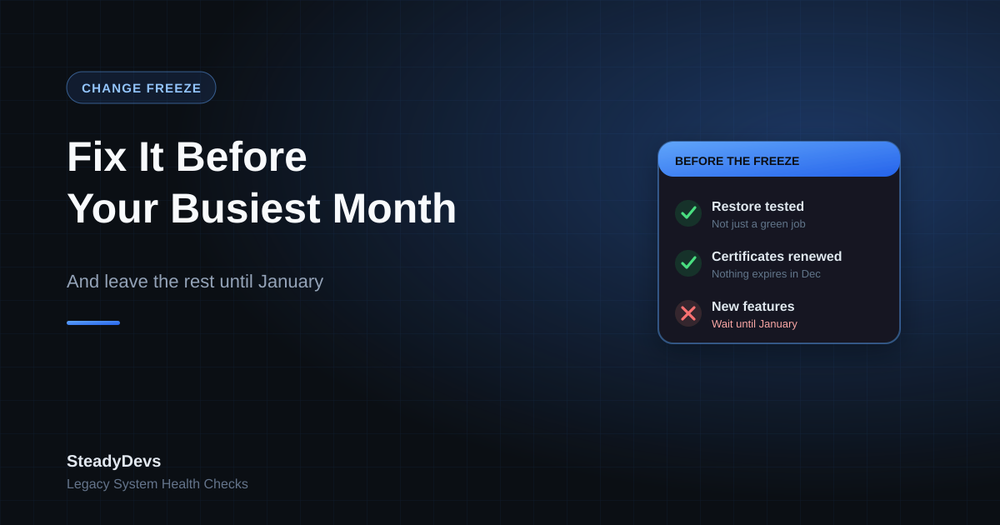

For most retailers, F&B operators and distributors, the last six weeks of the year carry more transactions than any other stretch. They are also the weeks when staff take leave, suppliers close early, and the one developer who understands your system is on a plane.
That combination is why so many "the system went down during the sale" stories happen in December. Not because something new broke on its own, but because something was changed in a hurry the week before.
A change freeze is the simple answer: pick a date, finish the essential work before it, and stop changing production until the peak is over. Here's how to do it without freezing in the wrong things.
Why changes are riskier in December
- Load is highest. A slow query that nobody notices in March can lock the checkout when transaction volume doubles.
- Recovery is slowest. The people who can diagnose and roll back a change are least likely to be available.
- The cost of downtime is highest. An hour offline on a peak Saturday is worth many ordinary weekdays.
- Pressure produces shortcuts. "Just push the promo pricing change tonight" is how untested code reaches the till.
None of these mean you should never touch the system in Q4. They mean the threshold for "worth the risk" should rise sharply as the peak approaches.
Before the freeze: the short list worth doing
The weeks before the freeze are for reducing risk, not adding features. In our experience the useful list is short:
1. Prove your backup actually restores
Not "the backup job shows green"—an actual restore onto another machine, with someone checking the data is complete. If the worst happens on 20 December, this is the thing you'll need. We've written about why a backup isn't a backup until you've restored it.
2. Check disk space and database growth
Peak volume grows transaction tables and log files faster than usual. A database server that runs out of disk mid-December stops taking sales. Check free space, how fast it has been shrinking, and whether log files are being trimmed.
3. Fix the known, recurring problems
If there's an error the team already works around—"if the receipt printer hangs, restart the terminal"—now is the time to fix it properly or at least write the workaround down where every shift can find it.
4. Renew anything that expires over the holidays
SSL certificates, domain names, software licences, payment gateway credentials and API keys all expire on a date, and that date does not check your calendar. List them, and renew anything due before mid-January now.
5. Get promotional configuration in early
Year-end promotions, price changes and new SKUs are the most common reason for a late change. Agree the promotions early, load them before the freeze, and test them on a non-production copy.
A useful rule: if a change can't be tested and rolled back before the freeze date, it waits until January. "We'll be careful" is not a rollback plan.
During the freeze: what is still allowed
A freeze isn't a ban on all work. It's a ban on optional change. Write down what still qualifies:
- Fixes for an active outage or a bug that is losing money right now.
- Security patches for a vulnerability being actively exploited—applied carefully, with a rollback ready.
- Data and configuration changes that have been pre-approved, such as switching on a promotion that was loaded and tested earlier.
Everything else—new reports, UI tweaks, "while we're in there" refactoring, version upgrades—waits. If someone asks for an exception, the question is simple: what happens if we wait until January? If the honest answer is "nothing much," it waits.
Watch for the urgent-looking feature. "The boss wants a new sales dashboard for the year-end review" feels pressing, but it touches the same database the checkout uses. Build it in January, or build it against a copy of the data.
Have a plan for when something breaks anyway
A freeze lowers the odds of an incident; it doesn't remove them. Before the peak starts, make sure the business can answer these without a phone call to someone on leave:
- Who is on call each day of the peak period, and how do we reach them?
- If the system is down, can we keep selling? Offline mode, manual receipts, a card terminal that works without the POS?
- Where are the admin passwords, server addresses and vendor support numbers kept?
- Who has authority to decide to roll something back?
Fifteen minutes spent writing this down in November is worth hours of panic on a crowded Saturday.
After the peak: the change backlog
Keep a running list of everything that was deferred during the freeze. In the first two weeks of January, review it calmly: some items will have turned out not to matter, and the ones that do can be scheduled, tested and released properly—when your systems and your people are under the least pressure of the year.
Want a Pre-Peak Health Check?
We review backups, disk and database growth, expiring certificates and known recurring errors on older systems—so the busiest month of the year isn't the riskiest one.
Book a Health CheckFrequently Asked Questions
For most retail and F&B businesses, one to two weeks before trading peaks—typically late November or the first week of December—and running until the first full week of January. The exact dates matter less than agreeing them in advance and telling everyone.
You can't stop a vendor from releasing, but you can avoid switching on new features, changing integrations or migrating plans during the peak. Ask key vendors whether they run their own freeze; many do.
Assess it: is the vulnerability being actively exploited, and is your system exposed to it? If yes, apply it carefully with a tested rollback. If it's routine, schedule it for the first maintenance window in January.
Even more so. With one person, every change during the peak depends on them being reachable. A freeze means their absence is an inconvenience rather than a risk.